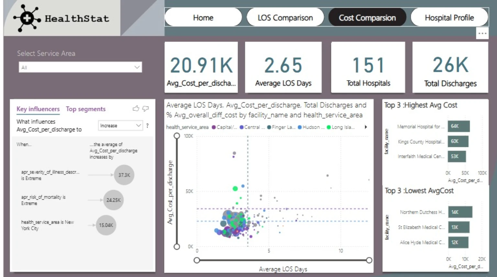
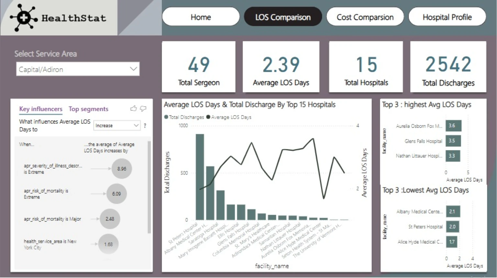
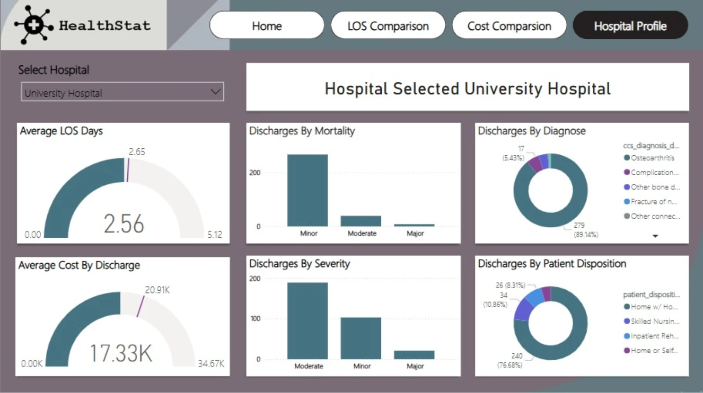
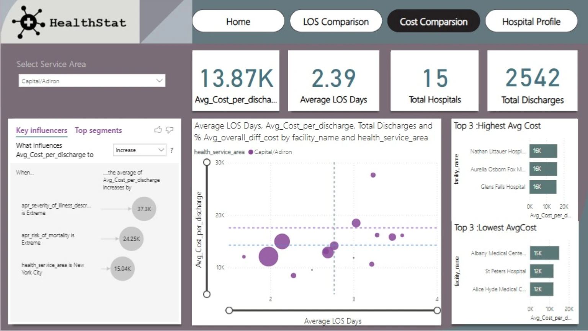

What the analysis set out to answer
Understand differences in discharge costs and length of stay across hospitals and healthcare service areas.
Comparing discharge costs, length of stay, and facility-level patterns to support informed hospital performance reviews.
Understand differences in discharge costs and length of stay across hospitals and healthcare service areas.
Combined cost and LOS comparisons, exploratory key-influencer views, and drill-down hospital profiles.
Supports comparative performance reviews and helps frame questions for deeper investigation; displayed associations do not establish causation.




Portfolio analysis based on supplied dashboard screenshots. Figures are descriptive, not verified business improvements. Dataset provenance, metric definitions, technical implementation, and commercial permissions should be confirmed before making stronger claims.